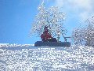
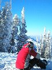
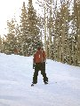

On the slopes in Utah
Instead of our more usual New Years snowboarding in France, we thought we'd swap our holidays around and have an extended break. After recommendation from friends we decided to head over to Utah and spend some time at the numerous resorts around Salt Lake City. We had 8 snowboarding days, and managed 7 different mountains, and there is still at least two resorts within driving distance that we didn't get to go to - maybe next time (and there will be a next time.
We did a two centre break, spending our first 4 nights at the Hotel Ben Lomond in Ogden, and then the remaining 5 nights at the Park Plaza in Park City.
Resort review
Powder Mountain - The only mountain we visited twice, and our favourite. On our first visit the lower part of the mountain wasn't open, and on our second we were too late to investigate, so we'll just have to visit again some other time :-). Our favourite runs were Dr C and Picnic off the drag lift as there was still lots of powder stashes around. We did night boarding here to celebrate UK New Year and had great fun on the Confidence run, cutting through the cat track in the trees. Also does a cracking portion of chilli cheese fries.
Snowbasin - The poshest resort I've ever been to, I've never seen lodges like it before. There was snow making going on at the bottom of the runs heading down to Strawberry Express, and this area was quiet and fun. Our favourite run was probably Sweet Revenge in the Middle bowl. I'd like to visit again someday.
Wolf Mountain - We like visiting the smaller resorts, and so we went to Wolf on New Years day when we were changing hotels between Ogden and Park City and only had a couple of hours of slope time available. This was a sensible choice as the mountain is pretty compact, especially when only about a third of it is open. We had great fun though and used the limited terrain to our advantage trying out new things. We even headed off through the terrain park and over some jumps. Favourite run was the combination of Bayots Boulevard, Red Tail and Moose Merge.
Brighton - As we live in Brighton on the south coast of the UK, it was necessary that we spend a day here. We found Brighton to be quite a challenging mountain, and felt that a couple of years ago we'd have struggled to get as much out of it. Maybe snow conditions had something to do with this feeling. A great day, and probably our 2nd favourite mountain. Our favourite runs were Golden Needle and Aspen Glow, both off the Great Western Express lift.
Snowbird - Probably our least favourite resort. It has quite a european feel, possibly due to the long traverses and partial flat sections leaving it more suited to skiers than boarders. We enjoyed the runs off the Gad 2 lift the most and cut our losses having a shorter on mountain day. We talked about our experiences with a guy at a board shop in Park City who said that fresh snow transforms snowbird and it becomes a great boarders mountain. So, maybe we'll give it a go another year.
Park City - When we left the condo it was raining slightly, but by the time we got to the resort it was snowing, and this continued all day making for fresh snow everywhere. A great day, probably our favourite snow day of all time. Our favourite run was Silver King, one of Park City's signature runs. There is a great tool to help you choose your perfect route around the mountain which gives instructions on how to get around following your preferences (i.e. groomed, bumps, steeps etc).
The Canyons - Our last day, and we certainly spent a lot of time on the mountain. There were a few flats and traverses to get around, but overall another fun day, especially thanks to the 7 or 8 inches of fresh that had fallen overnight. Our favourite run was Pipedream and that was probably mainly due to circumstances. We were fortunate enough to be at the top of the lift just as they opened the run for the first time, and so we were in the first 20 or 30 people to head down through a field of fresh powder. Amazing!
(45 images.)
Back to index
Powder Mountain I |
Powder Mountain II |
Powder Mountain III |
Powder Mountain IV |
Powder Mountain V | 
Powder Mountain VI |
Powder Mountain VII | 
Powder Mountain VIII |
Powder Mountain IX |
Powder Mountain X |
Powder Mountain XI | 
Powder Mountain XII |
Powder Mountain XIII | 
Snowbasin I |
Snowbasin II |
Snowbasin III |
Powder Mountain XIV |
Powder Mountain XV |
Powder Mountain XVI |
Powder Mountain Night Boarding |
Chilli Cheese Fries |
Warming by the fire |
Wolf Mountain I |
Wolf Mountain II |
Corduroy snow |
Wolf Mountain III |
Brighton I |
Brighton II |
Brighton III |
Brighton IV |
Brighton V |
Brighton VI |
Brighton VII |
Snowbird I |
Snowbird II |
Snowbird III |
Park City I |
Park City II |
Park City III |
Park City IV |
Park City V |
Canyons I |
Canyons II |
Canyons III |

Canyons IV |
Back to index